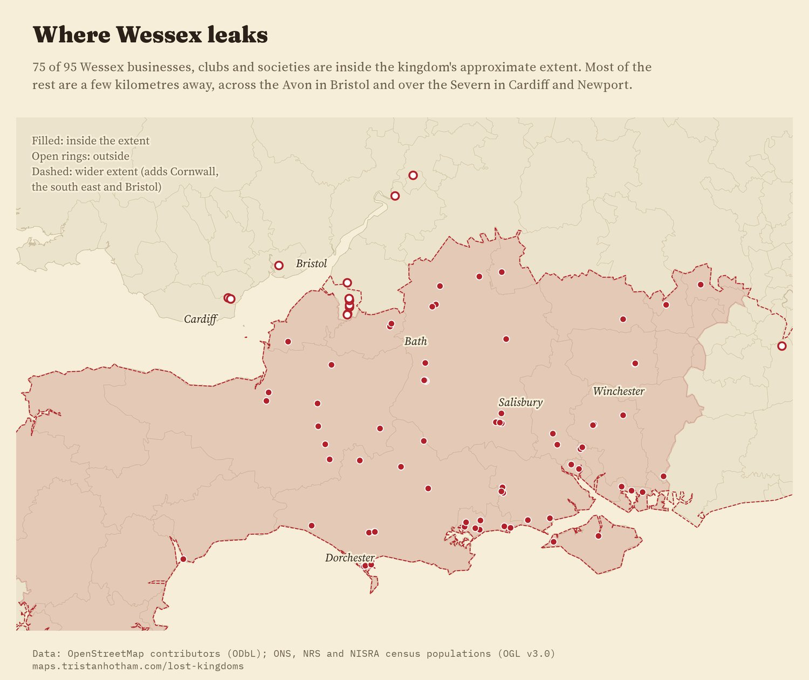
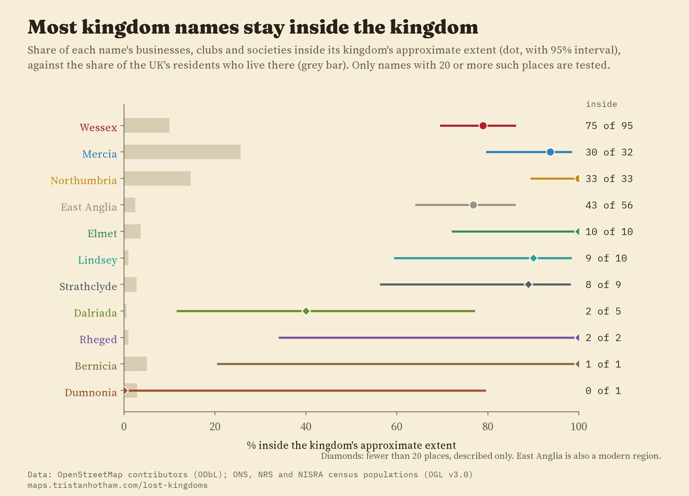
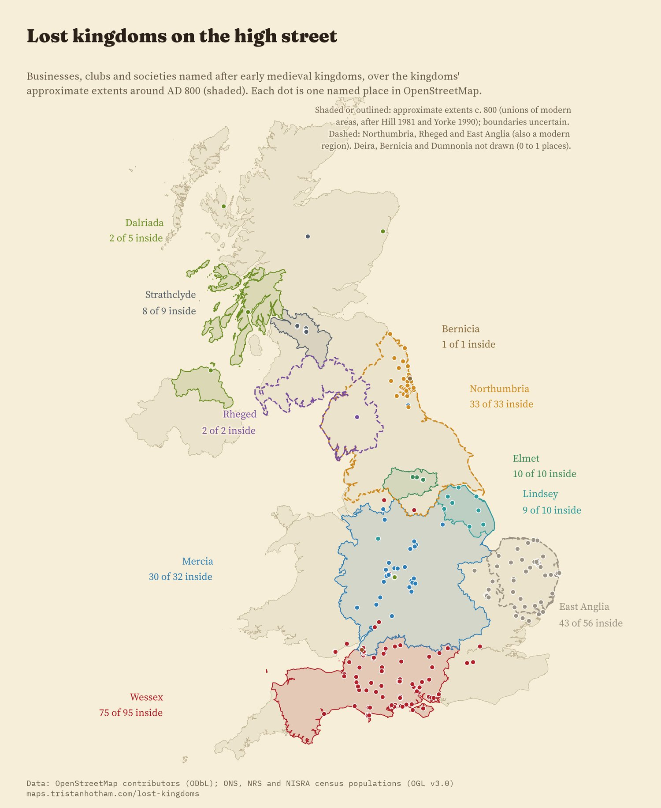
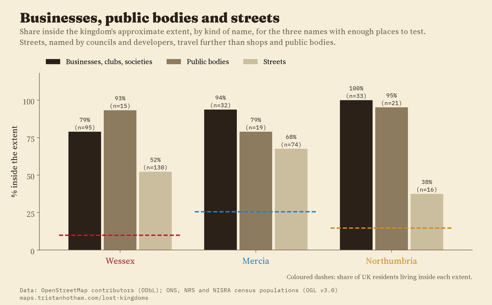
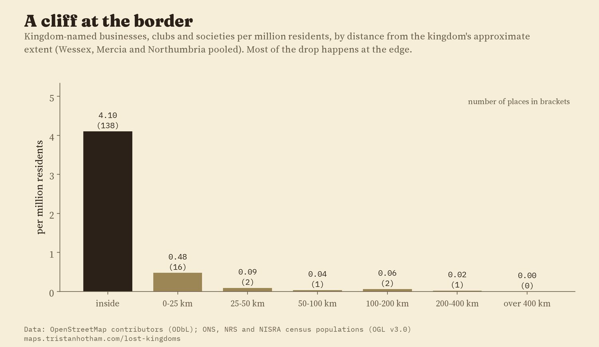
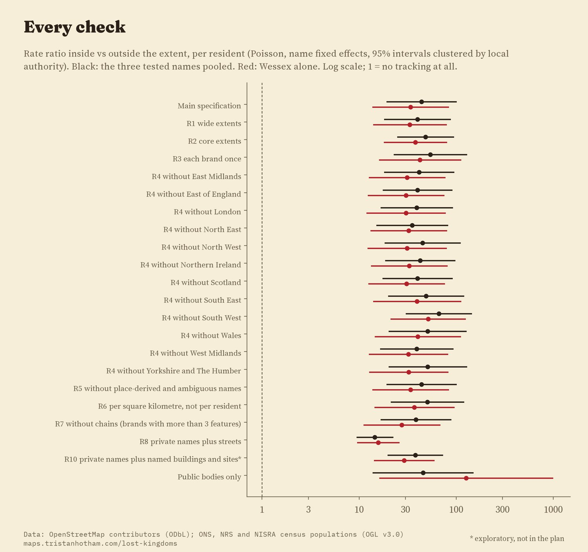

Every UK business, club, public body and street in OpenStreetMap named after an early medieval kingdom, over the kingdoms' approximate extents around AD 800 (shaded). Filled dots are inside their kingdom, rings outside. Tap a dot.
Britain is full of kingdoms that vanished more than a thousand years ago. Wessex, Mercia and Northumbria are the better known; Elmet around Leeds, Rheged near the Solway, Lindsey in north Lincolnshire, Strathclyde on the Clyde and Dalriada in Argyll and Antrim are quieter. Their names live on in shop signs, pubs, police forces and street names. I wanted to know whether those names still sit where the kingdoms were, or whether they have wandered. So I took every place in OpenStreetMap whose name contains one of these kingdoms, read each one, and checked it against a rough outline of the kingdom around the year 800.
Names travel. A company founded in Dorset can open a branch in Manchester, a pub can be called anything its owner fancies, and Thomas Hardy borrowed "Wessex" from early English history as the setting of his novels. So it would not be surprising to find kingdom names scattered across the country. On the other hand, a name like Mercia or Northumbria only means something to customers who feel they live there.
From 7,500 OpenStreetMap features with a county or kingdom word in their name, I kept 1,087 whose name contains a kingdom as a whole word (not "Commercial", which hides "Mercia", or "Madeira", which hides "Deira"). Of these, 254 are businesses, clubs, societies, charities and places of worship, 93 are public bodies such as police forces, schools and councils, and 336 are streets. The rest are bus stops, railway lines, substations and the like. For the early medieval kingdoms (leaving out East Anglia, which is also a modern region) there are 198 businesses and clubs.
Of 95 Wessex businesses, clubs and societies, 75 are inside the kingdom's approximate extent (Hampshire, the Isle of Wight, Wiltshire, Dorset, Somerset, Berkshire and Devon), where 10% of the UK's residents live. Per resident, that is 34 times as many inside as outside (95% interval 20 to 71). Of the 20 outside, 14 are within 25 km of the edge: 7 in Bristol, just north of the Avon, which I left out of Wessex because the outline takes the Avon as its edge, and 4 car dealers across the Severn in Cardiff and Newport. The furthest is in Oldham.

Wessex businesses, clubs and societies. Filled: inside the approximate extent; rings: outside.
Mercia is a big kingdom, covering the Midlands, where 26% of UK residents live, so names there have plenty of room. Even so, 30 of 32 Mercia businesses are inside it. One of the two outside is a garage in Stockport, 4 km over the line. Northumbria is tighter still: all 33 Northumbria businesses, from Northumbrian Heritage Meats to the Northumbrian Piper pub, are inside the old kingdom, all 33 of them in the North East region, where the name was taken up again by the police, a university and the water company.

Share inside each extent (dot, 95% interval) against the share of residents (bar).
The smaller kingdoms have few named places, so the numbers are a description, not a test. All 10 Elmet businesses and clubs are around Leeds and Selby, but 6 of them take it from a place, Sherburn in Elmet, Barwick in Elmet or Elmete in Leeds, rather than from the kingdom directly; the rest include Elmet Fisheries, Elmet Kitchen and the Elmet Social Club. Rheged has just 2 businesses, both at the Rheged centre near Penrith. Lindsey (north Lincolnshire) has 9 of 10 inside, once personal names such as Flowers by Lindsey are set aside. Strathclyde has 8 of 9. Dalriada is the exception: only 2 of 5 inside, with a guesthouse in the Highlands, a sports ground in Aberdeen and a trustee firm's office in Birmingham. East Anglia, which is also a modern region, has 43 of 56 in Norfolk and Suffolk, and all of them within the wider modern region.

Every kingdom-named business, club and society over the approximate extents.
I expected public bodies, which serve a defined patch, to stick to their kingdom more closely than shops. They do not, clearly: for the three names with enough cases, 89% of public bodies and 86% of businesses are inside, a difference the data cannot tell apart from none (odds ratio 0.87, 95% interval 0.29 to 2.60). Streets are different. Only 52% of kingdom-named streets are inside their kingdom. A Wessex Close or Mercia Drive is usually a developer's or council's choice from a list of grand-sounding names, and it travels further than a business sign.

Share inside the extent by kind of name.

Kingdom-named businesses per million residents, by distance from the extent.
I wrote the analysis plan down before measuring anything against the kingdom outlines. The headline holds in all 19 planned checks: with wider or narrower kingdoms, counting each chain once, dropping chains, leaving out each English region and each nation in turn, measuring per square kilometre rather than per resident, and adding streets. Against the wrong kingdom's outline, as a placebo, the names show no preference at all (0.97 times, 95% interval 0.51 to 1.83).

Every check: the rate ratio per resident, inside against outside.
Names. OpenStreetMap features in the UK whose name contains a county or kingdom word, from the QLever query service. I matched each kingdom as a whole word, with its adjective (Mercian, Northumbrian), and read every match. Bus stops, railway lines, substations, signs and names that come from a street ("Wessex Road Surgery") are left out. Lindsey is also a first name, so personal names are dropped, and so is anything near Lindsey in Suffolk or Norton Lindsey in Warwickshire. A node and a building outline of the same pub count once.
Kingdoms. There are no agreed borders for kingdoms of the 7th to 9th centuries. I drew each as a union of modern areas, following the standard maps (Hill's Atlas of Anglo-Saxon England and Barbara Yorke's work), in three versions: heartland, the main extent around 800, and the widest plausible extent. All three were fixed before any name was checked against them.
Comparison. Residents from the 2021 and 2022 censuses give the baseline: if names ignored the kingdoms, the share inside would match the share of residents inside. Uncertainty is from resampling whole brands, so a chain of charity shops counts as one decision.
What this cannot say. OpenStreetMap does not list every business, and it maps some areas more fully than others. I cannot date the names, so I cannot say which came before or after a revival such as Hardy's. Strathclyde is also a river valley and a former council region; Northumbria and Mercia are the names of modern police forces and water companies, which may have made them local again. The pattern is a description, not a cause.